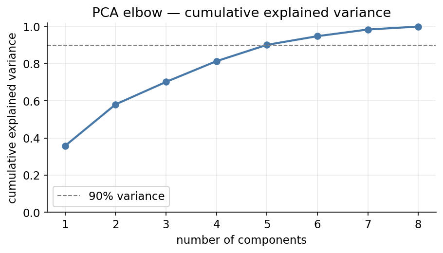
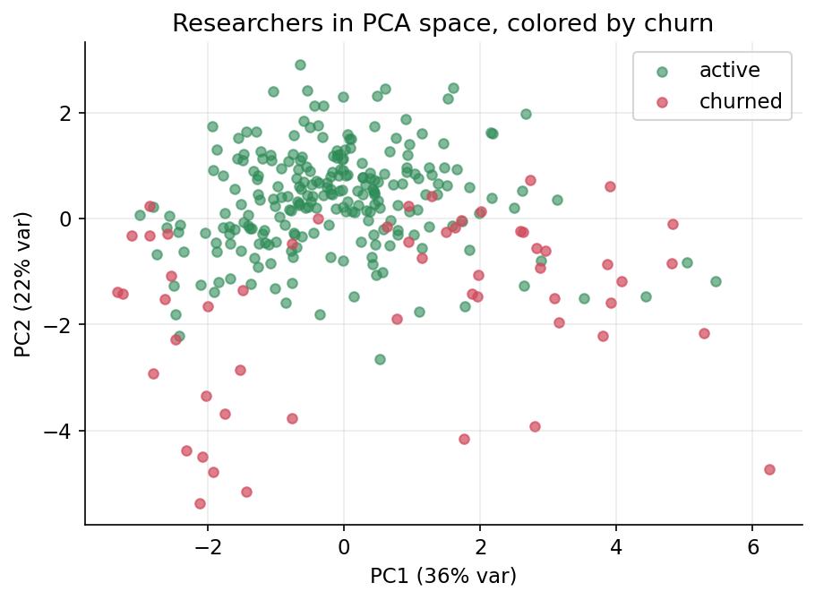
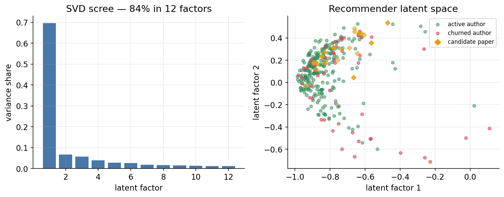
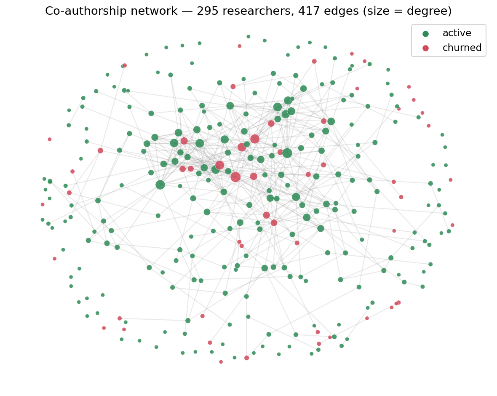
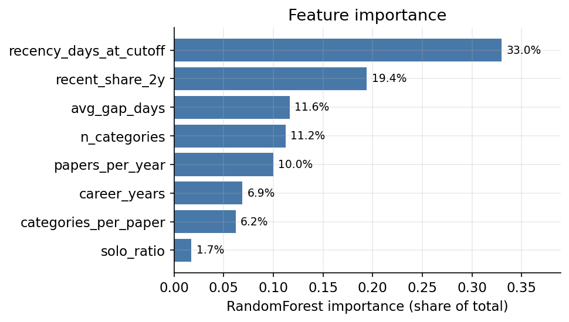

A production-grade pipeline that predicts which arXiv researchers will stop publishing, explains why through feature selection, PCA/SVD and co-authorship structure, and acts on it by recommending papers to re-engage at-risk authors — the academic analogue of Netflix/Spotify/LinkedIn retention systems.
▶ GitHub repository — github.com/oscarbarr05/arxiv-churnPublic repo. The grader runs a single command:
git clone https://github.com/oscarbarr05/arxiv-churn.git && cd arxiv-churn && docker-compose up --build,
then opens http://localhost:8000 (dashboard) or /docs (API).
No API key, no manual steps — raw data and trained models are committed.
POST /predict.The guiding principle of the unit — “better features beat better algorithms” — is the thread through every section: a plain RandomForest on well-engineered temporal features outperforms anything fancier on raw fields.
| Rubric component | Weight | Where / evidence |
|---|---|---|
Docker setup works (docker-compose up) | 15–30% | §9. One command from a clean clone; robust pip (timeout/retries), runtime-only deps. |
| Data collection & churn label (justified threshold, balanced classes) | 15% | §3, §4. Two-stage scraper; leakage-free 2024-06-30 cutoff; 18.6% balance + class_weight. |
| Feature generation (creativity, domain logic, 8+ features) | 20% | §5. 14 features in 4 families (ratio / time / aggregation / binary). |
| All 4 selection methods + comparison table | 25% | §6. Filter / RFE / DecisionTree / RandomForest + consensus table + 5-fold CV. |
Working /predict (valid churn + probability) | 15% | §8. Pydantic input → {churned, churn_probability}. |
| PCA elbow + 2D scatter colored by churn | 10% | §7 & Figures A–B. |
SVD decomposition + working /recommend | 20% | §7, §10 & Figure C. Gated at prob ≥ 0.5. |
| Network graph (networkx) + centrality features in model | 15% | §11 & Figure E. degree / betweenness / PageRank. |
| Updated feature-selection table incl. network features | 10% | §11. 4 methods re-run with centralities. |
| Report: model comparison + recommendation logic + PM reflection | 15% | §12, §10, §15. |
| Original 8-step deliverables | 30% | §3–§9 (mapped in §16). |
scraper.py)Source: the public arXiv API (no key, no login). Collection is split so the churn label reflects real activity, not a sampling artifact:
cs.CL
(~4 800 papers). Sampling across all years avoids the “recent papers only”
bias that would exclude churned researchers entirely.au:"Name" query fetches their complete record (20 333 author-paper rows)..get();
pagination via start; network errors retried once. Raw output saved
to data/raw/ and committed so the build needs no network.A naïve days_inactive > 180 label computed “today” would leak
recency into both the label and the features, inflating every metric.
Instead we split time itself:
This mirrors production churn systems: observe behaviour up to “today”, predict inactivity over the next window. Two years fits academia's rhythm (active cs.CL authors publish with median gaps well under a year, verified in the notebook).
class_weight="balanced" as a second guard.features.py)No raw API field is used directly. 14 engineered features span the four required families and cover recency / frequency / magnitude:
| Feature | Family | Why it predicts churn |
|---|---|---|
| recency_days_at_cutoff | time · recency | #1 churn signal: silence already growing at the cutoff |
| recent_share_2y | time · momentum | share of output in the last 2 pre-cutoff years; fading momentum precedes exit |
| papers_per_year | time · frequency | low cadence = weak attachment to the field |
| avg_gap_days / max_gap_days | time / aggregation | habitual & worst silence; past breaks predict future breaks |
| solo_ratio / is_solo_researcher | ratio / binary | isolation — solo authors lack collaborator “pull” |
| first_author_ratio | ratio | first authors are often students/postdocs — high-attrition population |
| categories_per_paper / n_categories / is_multidisciplinary | ratio / agg / binary | topical breadth; diversified researchers have more reasons to stay |
| avg_coauthors | aggregation · magnitude | team size proxies lab/network support |
| career_years | aggregation | seniority; veterans behave differently from newcomers |
| has_long_break | binary | ever silent > 1.5 yr before the cutoff — relapse risk |
Run in the notebook and shared with production via
model.py::consensus_selection (notebook and API cannot drift apart):
max_depth=5).n_estimators=100).| Feature | ANOVA rank | RFE | DT rank | RF rank | Decision |
|---|---|---|---|---|---|
| recency_days_at_cutoff | 1 | ✓ | 1 | 1 | KEEP |
| recent_share_2y | 2 | ✓ | 7 | 2 | KEEP |
| avg_gap_days | 5 | ✓ | 3 | 3 | KEEP |
| n_categories | 3 | ✓ | 4 | 4 | KEEP |
| papers_per_year | 10 | ✓ | 2 | 5 | KEEP |
| career_years | 12 | — | 5 | 6 | KEEP |
| categories_per_paper | 6 | — | 10 | 8 | KEEP |
| solo_ratio | 8 | — | 6 | 11 | KEEP |
| is_multidisciplinary | 4 | — | 10 | 13 | DROP |
| is_solo_researcher | — | — | — | — | DROP (constant) |
papers_per_year is ranked 10th by ANOVA (which scores features in
isolation) yet selected by RFE and top-5 by both trees — its signal only appears
in combination, exactly what filters miss. is_multidisciplinary
is the mirror image: ANOVA ranks it 4th but RF last, because given
n_categories it is redundant. When the single tree and the forest
disagree, we trust the average of 100 trees over one greedy tree.Final set (8): recency_days_at_cutoff, recent_share_2y, avg_gap_days, n_categories, papers_per_year, career_years, categories_per_paper, solo_ratio. Validated by 5-fold stratified CV — accuracy 0.885, precision 0.746, recall 0.582, F1 0.652.
The four methods select existing features; PCA/SVD create new compressed ones. PCA on standardized features ≈ SVD of the covariance matrix.



scipy.sparse.linalg.svds, k=12, 84% variance). Left:
scree. Right: authors (circles) and candidate papers (gold) in the recommender's
latent space.model.py, main.py)Final model: RandomForest (n_estimators=300,
class_weight="balanced", random_state=42), saved with
joblib and loaded once at startup. main.py is
thin — endpoints only. Endpoints:
POST /predict — Pydantic input → {"churned": bool, "churn_probability": float}.
The 8 model features are required; the other engineered features are optional extras.GET /health → {"status":"ok"}.GET /features — self-documents the expected fields, churn definition and CV metrics.GET /authors, POST /recommend — see §10.Dockerfile: python:3.11-slim, requirements copied
before code (layer caching), uvicorn on port 8000.
docker-compose.yml: one churn-api service, ports
8000:8000, ./data mounted.
--timeout=120 --retries=10 --prefer-binary so the build survives slow
networks; the image installs a runtime-only requirements-docker.txt
(no matplotlib — only the notebook needs it), cutting ~8.5 MB and 6 wheels.
model.pkl, recommender.pkl, viz.json and the
raw CSVs are committed, so the container works offline on first run.recommender.py, /recommend)The researcher×category interaction matrix is factorized with truncated SVD
(k=12, 84% variance). An at-risk researcher and every candidate paper live in the
same latent space; /recommend returns the most cosine-similar
recent papers by still-active authors, never the researcher's own work.
A co-authorship graph (networkx) is built where an edge means two researchers share a pre-cutoff paper. degree, betweenness and PageRank centralities become new features, and all four selection methods are re-run with them included.


papers_per_year). Yet added
to the model they lift F1 from 0.652 to 0.678 and recall to 0.618.
Sociological reading: collaboration is retention — isolated researchers
churn more.| Setup | Accuracy | Precision | Recall | F1 |
|---|---|---|---|---|
| A — selected original features (served by the API) | 0.885 | 0.746 | 0.582 | 0.652 |
| B — PCA (3 components) | 0.858 | 0.671 | 0.473 | 0.537 |
| C — original + network centralities | 0.892 | 0.759 | 0.618 | 0.678 |
Why the API serves setup A, not C: every input of A can be computed from a single researcher's public record; setup C would require recomputing graph centralities per request, coupling inference to a full dataset refresh. Setup C is the offline “analyst's model”; the trade-off is documented, not hidden.
/recommend produces) the moment cadence
decays, not after two silent years./features.Treat the pipeline as one predict → explain → act loop. (1) Predict runs
nightly, producing a ranked re-engagement budget, not a list of “doomed
users”. (2) Explain routes the channel: recency-risk → content nudges
(/recommend); isolation-risk (network features) → social features.
The feature-selection table is literally the intervention router. (3) Act is an
experiment, never a fiat: hold out a control group, measure incremental
retention, feed it back into the threshold. The 0.5 gate is the first, deliberately
simple version of that policy. The deepest lesson transfers across domains:
churn is rarely sudden — cadence decays first, so systems that watch the
derivative of engagement act while there is still something to save.
| # | Step | Status |
|---|---|---|
| 1 | Data collection (reusable scraper, rate limits, pagination, missing fields) | ✓ §3 |
| 2 | Churn label (binary, justified threshold, class balance checked) | ✓ §4 |
| 3 | Feature generation (14 features, 4 families, recency/frequency/magnitude) | ✓ §5 |
| 4 | Four selection methods + consolidated table + 5-fold CV | ✓ §6 |
| 5 | Train RandomForest & serve (/predict, /health, /features) | ✓ §8 |
| 6 | PCA elbow + 2D scatter + SVD + comparison | ✓ §7 |
| 7 | SVD recommender (/recommend, churn-gated) | ✓ §10 |
| 8 | Network analysis + centralities + updated selection table | ✓ §11 |
| — | Docker (one command) + written report | ✓ §9, this doc |
Rebuild from scratch: scripts/collect_data.py →
build_model.py → scripts/make_viz.py →
scripts/make_notebook.py. Stack: Python 3.11, FastAPI,
scikit-learn, pandas, numpy, scipy, networkx, matplotlib, joblib; dashboard uses
vendored Plotly (offline).
Limitations: arXiv silence is a proxy for leaving research (venue migration looks like churn); author names are not disambiguated (no ORCID); one category (cs.CL); graph centralities are community-relative, not global.
▶ github.com/oscarbarr05/arxiv-churnRun: docker-compose up --build → API on
localhost:8000 · dashboard at / · Swagger at /docs.